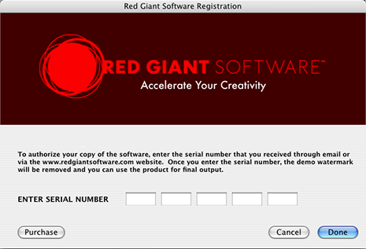
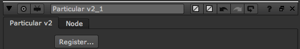
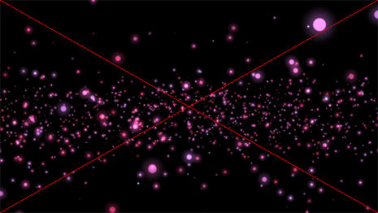

Installation
Trapcode Particular 2.1 comes packaged as a complete software installer. You must have installed the host application, Nuke version 6.1 or higher. The installer will automatically place the required components on your hard drive and guide you through the process of installing the plug-in.
Please check www.redgiantsoftware.com for the latest compatible host versions.
Activation
The final installation step before using Trapcode Particular is entering your serial number into the registration dialog, which will appear the first time you run the installer. YOU MUST ENTER A SERIAL NUMBER TO USE TRAPCODE PARTICULAR IN AUTHORIZED MODE. You will receive a confirmation email after your purchase that contains your serial number.
The serial number for Trapcode Particular appears in the following format:
AAAA #### #### #### ####
The activation code is a series of 20 characters. You must enter all digits to complete the activation. You can also choose to run the software in demo mode simply by leaving the fields blank. If you choose, you can enter the serial number after installation by pressing the Options button in any of the host applications. The following dialog will appear so you can authorize your version.

Demo Mode
If you choose Demo on installation, the plug-in will run in demo mode until you enter a serial number. The output will contain a red "X" across the image in both previews and final renders. Click the Register button under the Registration group to open the Red Giant Software authorization screen and enter a serial number.
NOTE: Linux users must register via this button since the Registration dialog isn't included in the Linux installer.

The Register button.
The rendered image will appear as shown below.
